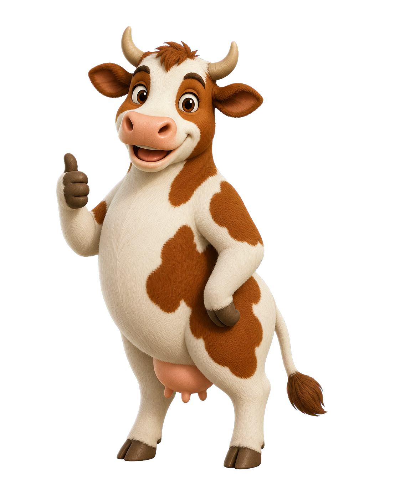

Penularan utama
Terutama melalui lalat penggigit, nyamuk, dan caplak yang mengisap darah.
Deteksi berbasis YOLOv8
Unggah gambar yang terang dan menampilkan permukaan tubuh sapi dengan jelas. Hasil dipakai sebagai skrining awal, bukan diagnosis akhir.
Gambar beranotasi dan rincian deteksi akan tampil di sini.
Proses pertama dapat lebih lama saat server baru aktif.
Konfirmasi hasil mencurigakan kepada dokter hewan atau petugas kesehatan hewan.

Kenali penyakitnya
LSD adalah penyakit infeksi virus yang terutama menyerang sapi dan kerbau. Tanda yang dapat muncul meliputi demam, benjolan tegas pada kulit, pembesaran kelenjar getah bening, pembengkakan, penurunan produksi susu, dan penurunan kondisi tubuh.
Terutama melalui lalat penggigit, nyamuk, dan caplak yang mengisap darah.
LSD tidak menginfeksi manusia, tetapi dapat merugikan kesehatan dan usaha ternak.
Jika hasil mencurigakan
Deteksi dini perlu diikuti pemeriksaan lapangan. Hindari memindahkan ternak sebelum mendapat arahan petugas berwenang.
Jauhkan sapi yang dicurigai dari ternak lain dan batasi lalu lintas kandang.
Catat suhu, kondisi makan, lokasi benjolan, dan waktu gejala mulai terlihat.
Mintakan pemeriksaan dokter hewan atau dinas peternakan untuk konfirmasi.